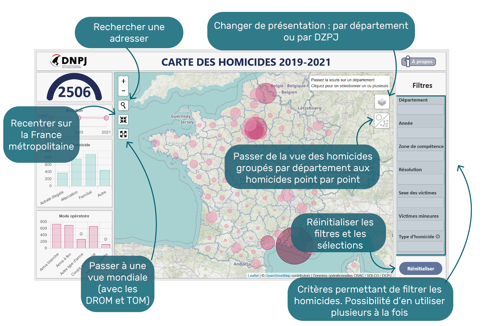

Cet outil cartographique fournit une visualisation interactive des homicides commis en France entre 2019 et 2021. Il permet de décrire leur répartition spatiale à différentes échelles selon le niveau de zoom.
Les informations présentées proviennent des données opérationnelles collectées par la CRAC, rattachée à la Sous-direction de la lutte contre la criminalité organisée et de la délinquance spécialisée. De nombreuses sources d’informations opérationnelles ont été mobilisées afin de détailler et géolocaliser les homicides de façon très précise.
Cet atlas interactif permet la visualisation de chiffres-clés et de graphiques dynamiques selon des critères spécifiques qu’il est possible de filtrer et de croiser entre eux (année, mode opératoire, sexe de la victime…).
Les homicides sont identifiés par des points et, en sélectionnant directement l'un d'eux, un descriptif précis s'ouvre, offrant des détails sur l'événement concerné.
La carte peut etre affichée sous deux échelles : les départements ou les DZPJ.
Pour effectuer des sélections multiples de départements ou de DZPJ, appuyez sur « Ctrl » et cliquez sur les différents départements/DZPJ ou sélectionnez-les via le filtre « Département » ou « DZPJ ».
Exemple d'utilisation :